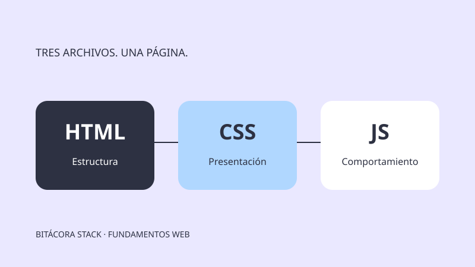

Desarrollo Web y Móvil
Cómo conectar HTML, CSS y JavaScript paso a paso
Aprende a conectar HTML, CSS y JavaScript con rutas relativas, defer y un ejemplo funcional. Organiza tus archivos y comprueba errores frecuentes paso a paso.
8 min de lectura · principiante
Leer artículo →